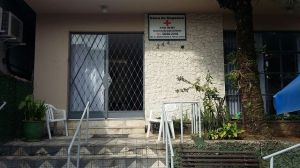
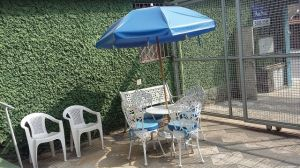

Vários são as situações que fazem alguém procurar uma Casa de Repouso para Idosos, os filhos já estão casados, as atividades trabalhistas já encerraram e, em alguns casos, o companheiro ou companheira já faleceu… Se o idoso apresenta dificuldades para executar as tarefas do dia a dia, em decorrência da capacidade funcional que está comprometida, pode ser o período de optar pelas casas de repouso. Isso porque, elas oferecem uma boa assistência a quem está na terceira idade, um ambiente limpo e com boa acessibilidade. Além disso, é uma boa alternativa para espantar a solidão, pois a casa está sempre cheia.
 A Casa de Repouso Ana Nery é o melhor local para aqueles que são tão importantes em sua vida, um local onde valorizam a segurança e o conforto de todos que ali se encontram. Fazemos com que se sintam em casa, proporcionando bem-estar, alegria e todos os tipos de assessorias necessárias para nossos queridos. Também contamos com terapias ocupacionais para mantê-los sempre ativos e entretidos em algumas atividades. Os horários de visitação são todos os dias das 9h às 17h.
Não deixe de conhecer nossas instalações!
Teremos prazer em recebê-lo!
2019 ® Todos os direitos reservados - T07